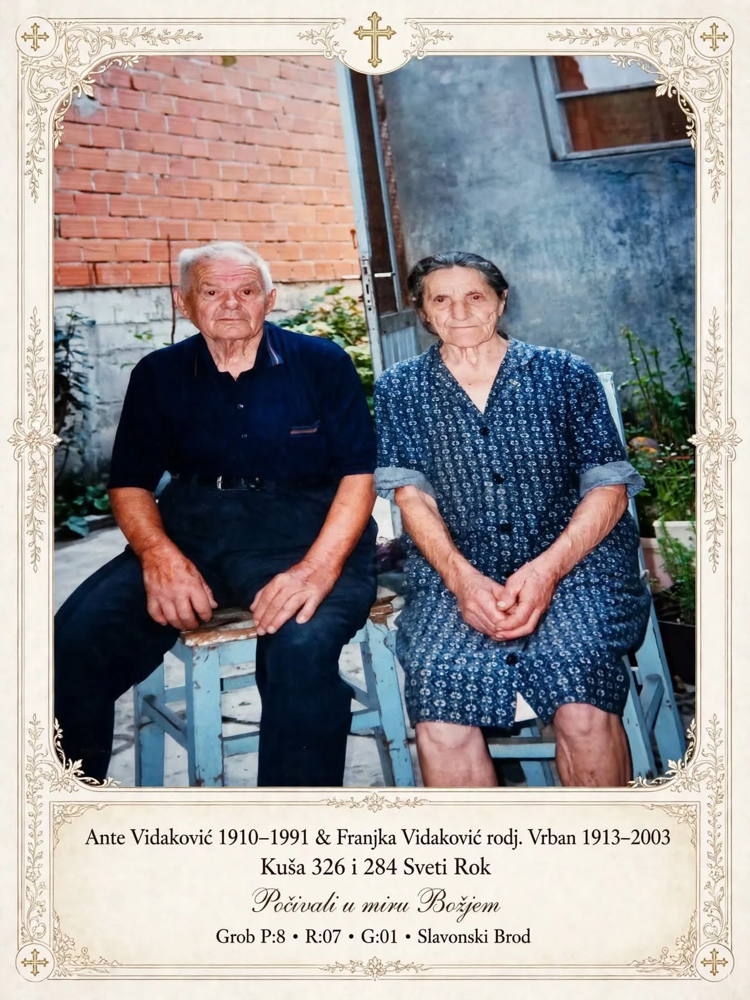

Ante Vidaković (Sošina) & Franjka Vrban
A page put together for Robertina Kozarić, their granddaughter and great-granddaughter, in answer to a question posted to the citizens of Sveti Rok. This is everything confirmed so far, and an honest account of what is still missing.
The one document in hand is the grave marker itself, and it already answers part of Robertina's question and complicates another part of it.

| Ante Vidaković | 1910–1991, of kuća 326, Sveti Rok. |
|---|---|
| Franjka Vidaković | née Vrban, 1913–2003, of kuća 284, Sveti Rok. |
| Inscription | "Počivali u miru Božjem" — "May they rest in God's peace." |
| Grob | P:8 · R:07 · G:01, Slavonski Brod. |
Robertina — this is what would move things forward
Everything on this page is free to reuse, and it will keep updating as more turns up. But the search has hit a real wall that only you (or someone in the village) can likely get past. Six questions, in order of how much they'd unlock:
- Update, and no longer the top worry it was: an independent Croatian genealogy site (Acta Croatica) lists Vidaković as a real, historical Sveti Rok surname — ranked about 20th most common in the village's past, and 10th today, well behind Miletić but genuinely there. So the name is right; it's just rare enough in a small village that sampling roughly every 5th–10th page of two 270-page registers can plausibly miss the one or two pages your family's marriages are actually on. The real ask now: do you know roughly when or where Ante and Franjka married, or Jakov and Marija before them — even a decade, or a town, would turn "read 270 pages" into "read 10."
- Do you know anything more about Jakov Vidaković's or Marija Miletić's own birth years, beyond what you posted? Even approximate ages would help pin down which years of the register to focus on.
- Does "Miletić gaj" match what you were told about "Miletić grove"? The register names a real hamlet by that name, with houses 12, 24, 27, 29, 30, 33, 34, 35, 36, 39, 44, 48, 50, 56, and 63 — does any of that match a house number your family mentioned?
- Do the names Luka Vrban or Marko Vrban mean anything to you, as possible relatives of Franjo? Both are recorded living at house 284 — Franjo's own house — in 1939–1941.
- Photos or memories of houses 326 and 284, or of a Vidaković/Vrban plot in the Sveti Rok cemetery itself (as distinct from the Slavonski Brod grave) — still the two things you originally asked for, and still not found.
No need to reply anywhere else — anything you know can go straight onto this page, or be passed along however's easiest, and it'll get folded in here.
The family, as Robertina named it
Robertina's own message to the village names the generation above Ante, and the two house numbers and two family names the request turns on:
"Dear citizens of Svetoroc, please if anyone knows anything about the family of Ante Vidaković Vidaković Sošina, his parents Jakov Vidaković Sošina and Mariju Miletić from Miletić grove from house number 326 and Vrban Franjko from Sveti Rok from house number 284, and if there are pictures of their houses and graves in the cemetery in Sveti Rok. Respectfully, their granddaughter, great-granddaughter Robertina Kozarić." — as posted, lightly re-punctuated for English readers
| Ante Vidaković | By-name "Sošina" — a house or lineage nickname distinguishing this Vidaković household from others in the village, a common pattern in Lika where a handful of surnames cover most families. |
|---|---|
| Jakov Vidaković "Sošina" | Ante's father — not yet dated. This is the generation a marriage or birth register for Sveti Rok, 1878–1930, would confirm. |
| Marija Miletić | Ante's mother, said to be from "Miletić grove" — most likely a hamlet or wooded holding named for the Miletić family, near or within the Sveti Rok cadastral area. Not yet located on a map. |
| Franjo Vrban | Franjka's father, of house 284 — the household Franjka carried into her marriage record as her maiden name. |
The spine — what's confirmed, what's candidate
Kept up to date as research continues. Solid, filled boxes are confirmed — from the grave card or Robertina's own message. Dashed boxes are candidates found in Sveti Rok's own records: same surnames, same village, plausible generation, but not yet linked to this family by a document that names the connection.
What the parish-register lead actually offers
A reply to Robertina's post pointed at the Sveti Rok marriage registers and an image of the Zagreb archive's holdings:
"Robertina Kozarić, pronašla sam na internetu matične knjige vjenčanih za Sveti Rok. Nažalost, snimke nakon 1930. godine su mutne i loše skenirane. Crkvene matične knjige vjerojatno se vode pod Lovincem, a mogu se pronaći i u arhivu u Zagrebu." — "I found the marriage registers for Sveti Rok online. Unfortunately, the scans after 1930 are blurry and poorly digitised. The church registers are probably kept under Lovinac, and can also be found in the archive in Zagreb."
Two concrete facts sit inside that reply, and they are the actual next steps for anyone continuing this from Sveti Rok or Zagreb:
| The volume named | A digitised set of Sveti Rok marriage registers, 1878–1940 was located online, with a note that scans after 1930 are hard to read. That places Franjka and Ante's own marriage — if it happened before 1940 and in Sveti Rok — inside a volume that is at least partly legible. |
|---|---|
| The parish of record | Sveti Rok's Catholic parish registers are kept administratively under Lovinac, the seat of the municipality. A parish priest or the Lovinac parish office is the first point of contact for a certified extract. |
| The archival copy | The same registers, or related civil and church holdings for the area, are also held at the state archive in Zagreb (Hrvatski državni arhiv), which is the standard second copy for Croatian parish registers filmed for preservation. |
Family records found in Sveti Rok — same surnames, not yet confirmed as this family
Sveti Rok Cemetery is real and documented (296 memorials on Find a Grave), and it does hold Vidaković and Vrban burials — distinct from the Slavonski Brod grave above. None of the people below has been confirmed as Ante, Franjka, Jakov, or Marija specifically, but they are the same surnames, in the same village, in the right generations, and every one is kept here in case a name, house number, or date connects on closer review.
Vrban — house 284 cluster, the exact house number Robertina gave for Franjo Vrban:
| Luka Vrban | 29 Apr 1874 – 15 Sep 1941, widower, wife Manda Vrban, residence Sv Rok 284. Old enough to be Franjo Vrban's father. Find a Grave: Sv Rok Parish Death Book, p.169 #22 |
|---|---|
| Marija Vrban | infant, 4 Dec 1939 – 31 Jul 1941, parents Marko Vrban & a mother whose name the transcription couldn't fully read ("_na Bevic..."), residence Sv Rok 284 — same house as Luka, same death-book page. Marko is plausibly a son of Luka's, which would make him a possible brother of Franjo. Find a Grave: Death Book, p.169 #12 |
Vrban — house 282 cluster, next door to 284:
| Jure Vrban | infant, 15 days old, died 14 Oct 1903, parents Mile Vrban & Kata Krpan, residence Sv Rok 282 (recorded with an older house number, "143", alongside it). Find a Grave: Death Book, p.30 #53 |
|---|---|
| Dane Vrban | died 20 Aug 1924, age 30 (so born c.1894), wife Dragica, née Vlašić, residence Sv Rok 282 — plausibly a son of Mile Vrban and Kata Krpan above. Find a Grave: Death Book, p.112 #34 |
Vrban — earlier, house 191:
| Mate Vrban | died 10 Mar 1885, age 48 (so born c.1837), of tuberculosis, wife Marija Vrban, residence Sv Rok 191 — an older or separate branch; the house number doesn't match 282 or 284. Find a Grave: Death Book, p.52 #20 |
|---|
Miletić — read directly from the marriage register, not Find a Grave. Robertina said Ante's mother, Marija Miletić, was "from Miletić grove." That place is real: the register itself names it, in Croatian, as "Miletić gaj" — exactly "Miletić grove" — with its own house numbers, separate from the main Sveti Rok numbering. This is the strongest single confirmation found so far that Robertina's family story matches the documentary record, even though the exact marriage of Jakov Vidaković and this Marija Miletić hasn't turned up yet.
| Miletić gaj | a hamlet with its own house numbers — 12, 24, 27, 29, 30, 33, 34, 35, 36, 39, 44, 48, 50, 56, and 63 seen so far, fifteen households in a place small enough it doesn't have its own separate entry in any gazetteer — distinct from Sveti Rok's own numbering (which is where houses 143, 147, 282, and 284 below sit). Multiple Miletić families lived there continuously from at least 1902 through 1936, covering the whole of Ante's childhood, youth, and the years he'd most plausibly have married in. Sv Rok Marriage Book, 1914–1936, pages n158–n255 |
|---|---|
| Ante Miletić & Marija Miletić | married 25 May 1914, both from Miletić gaj (houses 12 and 36), both age 22–23 — two Miletić cousins marrying within the same hamlet. Ante's parents: Frane & Niva Miletić. Marija's parents: Tomo & Marija Miletić. Not Ante Vidaković's parents, but confirms the hamlet was thick with Miletić households right when Ante's mother would have been growing up there. Sv Rok Marriage Book, p.n159 #62 |
| Kata Miletić | of Miletić gaj 48, married Petar Stjepan Japundžić, 1914 — a third Miletić-gaj household. Sv Rok Marriage Book, p.n158 |
| Ivan & Marija Miletić | of Miletić gaj 44. Their daughter Repa Miletić, age 23, married Jure Popić in 1921. Worth flagging on its own: this household has a mother named Marija Miletić — a different one from Ante's mother, since she's still raising a 23-year-old daughter in 1921, but it shows the name "Marija Miletić" recurs in this hamlet across more than one generation. Sv Rok Marriage Book, 1921, p.n180 |
| Marko Ante Miletić Natalović | married Milanda Miletić, of Miletić gaj 33, 1922 — a fifth Miletić-gaj household. Sv Rok Marriage Book, 1922, p.n195 |
| Ante Mile Miletić | of Miletić gaj 50, married Milanda Balen, 1925 — a sixth. Sv Rok Marriage Book, 1925, p.n210 |
| Ivan & Anđa Miletić | of Sv Rok 143 (the main village, not the gaj). Their daughter Marija Miletić, age 22, married a Sandor groom in 1906 — a different Marija Miletić from Ante's mother, but confirms a second Miletić branch living in the village proper. Sv Rok Marriage Book, c.1906, page n125 |
| Šimun & Ana Miletić (née Balen) | of Sv Rok 147. Their daughter Nata Miletić, age 19, married Ivan Japundžić in the same 1906 spread. Sv Rok Marriage Book, c.1906, page n125 |
| Marko & Nata Miletić | named as parents of a Nata Miletić who married into the Nogan family, 1902. Sv Rok Marriage Book, c.1902, page n100 |
Vidaković — a separate household, one generation above where Jakov Vidaković would sit:
| Tomo Vidaković & Marta Budak Vidaković | married in Sveti Rok, Tomo
age 29, Marta age 20 (so Tomo b. c.1868). Tomo's parents: Grgo & Pavica
Vidaković. Marta's parents: Grgo & Franjica Budak.
Witnesses: Mate Šulentić and Ante Vidaković — a
different, older Ante than Robertina's grandfather, who wasn't born until 1910.
Find a Grave: Sv Rok Parish
Marriage Book, p.46 #11
Their recorded children: Katherine "Kata" Vidaković Jurjevich (1888–1981), Nick Vidaković (1892–1932, emigrated to Caledonia, Wisconsin, USA), Joseph "Vidak" Vidaković (1894–1953), Mary "Marija" Vidaković Krpan (1897–1940), and Luka Vidaković (1897–1948). None is named Jakov, but this is clearly the same Vidaković lineage in the same village a generation or two before Ante. |
|---|---|
| Ivan Vidaković | 1931–2008, buried Sveti Rok Cemetery; no further detail transcribed yet. Born the year after Ante and Franjka would likely have married — worth checking as a possible son. Find a Grave memorial |
| Manda Ivezić Vidaković | 26 Sep 1910 – 25 Jul 1937, born the same year as Ante, married to Grga Vidaković, residence Lipac 317 (a neighbouring hamlet, not house 326). A different person from Franjka — kept here only because the birth year matches Ante's exactly. Find a Grave: Death Book, p.155 #22 |
Where to look next
- The Find a Grave transcriptions above — the contributor (listed as "BN" / "MC - 1") appears to be working directly from the Sv Rok parish birth, marriage, and death books held at the civil registry office in Gračac (Kneza Branimira 1, 23440 Gračac, Croatia), which is more complete and far more legible than the archive.org scan. Contacting that office directly, or the Find a Grave contributor, is likely the fastest route to the actual Ante × Franjka marriage entry and to Jakov × Marija's.
- archive.org — two registers, not one: "Sveti Rok marriages 1878–1940" and the separate "Lovinac marriages 1878–1940", which also includes Sveti Rok households. See the coverage log just below for exactly which pages have been read in each, with a link to every page cited; most of both registers still hasn't been. OCR text search is useless on either — the handwriting doesn't transcribe — so it has to be read page by page.
- Hrvatski državni arhiv (Zagreb) — holds microfilmed church and civil registers for this area, searchable in part through the ARHiNET portal; a written enquiry naming Sveti Rok, houses 326, 282, and 284, and the approximate decades would let an archivist point to the right signature/volume.
- The Lovinac parish office, which holds the registers this parish keeps in current use.
- Locally, in Sveti Rok itself — someone who knows the village can say directly whether house 326, 282, and 284 still stand or are remembered, and can confirm whether Luka and Marko Vrban connect to Franjo.
- Acta Croatica — an independent Croatian genealogy site that confirms Vidaković as a real, if uncommon, historical Sveti Rok surname, and lists 78 mentions of the surname across 9 sources dating to 1749. The individual entries sit behind a free account; this session didn't create one, but it's a live lead for anyone willing to register and dig through the per-person detail pages.
- Državni arhiv u Zadru (Zadar State Archive) — holds a large digitized collection of parish registers for this whole region, browsable online by place. A search turned up a specific entry for a Lovinac christening (birth) register, 1878–1899 — exactly the record type missing from everything else on this page, since only marriage registers have been findable so far. This session could not open the archive's own site directly (it blocked automated browsing, HTTP 403), so this is unverified beyond the search listing — but it's the single most promising lead on this whole page for anyone who can just open it in an ordinary browser: dazd.hr/hr/knjige/maticne-knjige (search by place — try "Lovinac" and "Sveti Rok").
- Državni arhiv u Gospiću — the state archive for Lika-Senj County itself (and, separately, for Gračac and Srb). Likely holds land, school, and civil records for this area beyond what's in church registers. arhiv-gospic.hr
- Two more sibling registers, now fully read: Gračac marriages and Ričice marriages, both read cover to cover this session (see the coverage log below). Neither contains the Ante × Franjka or Jakov × Marija marriage, and neither has a Vrban entry at all — but Ričice turned up three genuine Miletić marriages tied to Sveti Rok households, reinforcing that the "Miletić grove" detail points to a real, locally prominent family. With Sveti Rok's own register, Lovinac, Gračac, and Ričice all now checked without finding the target marriages, the civil registry office in Gračac (see above) and the Zadar state archive (below) are the strongest remaining leads.
Archive.org coverage log
The register runs 270 pages, 1878–1940, roughly 4–5 pages per year. This is the running record of what's been read by eye so far, kept precise so no future session re-covers the same ground by accident.
Sveti Rok book (sveti-rok-marriages-1878-1940):
| Checked — 1878–1879 (full read begins) | pages n3, n5, n7, n9 — the register's very first pages. Marko Miletić, of Miletić njiva ("Miletić field," another named Miletić locale distinct from "Miletić gaj"), groom, 1878 — a direct Miletić marriage right at the start of the book. A "Simun Miletić" witness also noted. No Vidaković or Vrban entry. |
|---|---|
| Checked — 1879–1880 (two more Miletić hits) | pages n11, n13. Nata Miletić, of Miletić njiva, bride, 1879, and Adam Miletić-Šipuly, of Sv Rok, groom, 1880 — both direct Miletić marriages. An "Ivan Miletić" witness also noted. No Vidaković or Vrban entry. |
| Checked — 1880–1881 | pages n15, n17. No Vidaković or Vrban entry. |
| Checked — 1881–1882 (two more Miletić hits) | pages n19, n21. Marija Miletić-Igudan, of Sv Rok, bride, 1881, and Marija Miletić, of Miletić njiva, bride, 1882 — two more direct Miletić marriages. No Vidaković or Vrban entry. |
| Checked — 1882 (continued) | pages n23, n25. No Vidaković or Vrban entry. |
| Checked — 1883 (four more Miletić hits) | pages n27, n29. Anka Miletić and Marija Miletić (both brides, Sv Rok), then Ika Miletić, Mate Miletić, and a second Anka Miletić — five more direct Miletić marriages, all Sv Rok residents, all in 1883. No Vidaković or Vrban entry. |
| Checked — 1882–1894 (earlier spot check) | pages n30, n50, n70. No Vidaković, no Vrban. A widower "Petar Miletić" marrying a widow "Katarina Miletić," 1894 — Miletić present this early too. |
| Checked — 1884 (two more Miletić hits) | pages n32, n34. Marija Miletić (bride, x2) and Marko Miletić (groom) — three more direct Miletić marriages. No Vidaković or Vrban entry. |
| Checked — 1885 (more Miletić hits) | pages n36, n38. Jose Miletić (groom) married Marija Miletić (bride) — a Miletić-to-Miletić marriage; witnesses "Stjepan Miletić" and "Ivan Miletić" also noted. No Vidaković or Vrban entry. |
| Checked — 1886 (two more Miletić hits) | pages n40, n42. Mara Miletić and Marija Miletić, both brides. No Vidaković or Vrban entry. |
| Checked — 1887 | pages n44, n46. Marija Miletić bride. No Vidaković or Vrban entry. |
| Checked — 1888 (gap to n50 now closed) | page n48. Jela Miletić bride. No Vidaković or Vrban entry. The book is now read continuously from n3 through n50. |
| Checked — 1889 (more Miletić hits) | pages n52, n54. Jere Miletić and Dane Miletić, both grooms; witnesses "Ivan Miletić" and "Dujo Miletić" also noted. No Vidaković or Vrban entry. |
| Checked — 1889–1890 (two more Miletić hits) | pages n56, n58. Ivka Miletić and Marta Miletić, both brides; a "Stjepan Miletić" witness also noted. No Vidaković or Vrban entry. |
| Checked — 1890–1891 (two more Miletić hits) | pages n60, n62. Dujo Miletić and Mate Miletić, both grooms; a "Stanko Miletić" and a "Jose Miletić" witness also noted. No Vidaković or Vrban entry. |
| Checked — 1891–1893 (gap to n70 nearly closed) | pages n64, n66. Marta Miletić (bride), Anica Miletić (bride), and Franc Miletić married Jela Miletić — another Miletić-to-Miletić marriage. No Vidaković or Vrban entry. |
| Checked — 1893 (gap to n70 now closed) | page n68. Matija Miletić bride. No Vidaković or Vrban entry. The book is now read continuously from n3 through n70. |
| Checked — 1894 (more Miletić hits) | pages n72, n74. Ana Miletić and Manda Miletić, both brides. No Vidaković or Vrban entry. |
| Checked — c.1898–1902 | pages n10, n90, n100. No Vidaković. A Miletić mother (Nata, parents Marko & Nata Miletić) marrying into the Nogan family, 1902. |
| Checked — c.1904–1916 | pages n117–n163 (numerous spreads). No Vidaković entries found. Confirmed "Miletić gaj" as a real hamlet with its own house numbers (12, 36, 48), thick with Miletić households through 1914 — see the Miletić table above. Also confirmed Miletić households at Sv Rok 143 and 147, in the main village. |
| Checked — 1919–1926 | a near-continuous read: pages n170, n172, n176, n180, n184, n188, n192, n195, n198, n202, n206, n210. No Vidaković, no Vrban. Six more Miletić gaj households found (houses 27, 29, 33, 35, 39, 44, 50, 56), confirming the hamlet stayed thick with Miletić families right through Ante's childhood and youth. |
| Checked — 1928–1932 | pages n225, n226, n228, n230, n232, n234, n236, n238, n240, n244 — a near-continuous read of this stretch, not just spot sampling, since this is a strong candidate window for Ante and Franjka's own marriage. No Vidaković or Vrban match. Three more Miletić gaj houses confirmed (34, 44 again, 63), plus a Miletić household still at Sv Rok 147 in 1932 — the same house as the 1906 Šimun & Ana Miletić entry, suggesting one family held that house for at least a generation. Also a second, different "Jakov Miletić" (Miletić gaj 34, age 18, marrying 1932) — right first name, wrong surname, again. |
| Checked — 1933–1936 | pages n249, n250, n251, n252, n253, n254, n255, n256, n257, n258, n259, n261 — another near-continuous read. No Vidaković or Vrban match. Three more Miletić gaj houses (24, 30, 63 again), and a "Mirko Janko Miletić" as a wedding witness in 1938. |
| Attempted, unreadable — c.1937–1938 | pages n262–n267: this stretch was pulled at full resolution (7016×4961) and run through illumination correction and local adaptive contrast (CLAHE) to see if better processing would help — it fixed the uneven lighting cleanly, but the handwriting itself turned out to be genuine camera motion blur in the original photograph, not a lighting problem. Contrast and inversion can't recover blur; these specific pages need a sharper photograph of the physical book, or the Gračac registry's copy, not more processing of this scan. This is the exact stretch the original village-thread reply warned about ("scans after 1930 are blurry and poorly digitised") — confirmed precisely, not just page-by-page hearsay. Pages n265 and n269 nearby are legible, so it's a patchy few pages, not the whole decade. |
| Checked — 1940 | page n269. No Vidaković or Vrban match. |
| Not yet checked | c.1878–1882 and c.1894–1898 (small gaps), and scattered pages between the spreads listed above — but with 1919–1926 now read near-continuously too, this book has had a close look at nearly every decade from 1882 to 1940. No Vidaković entry as either party has turned up anywhere readable in that whole span. |
Lovinac book (lovinac-marriages-1878-1940) — a separate register, 265 pages, same 1878–1940 span, discovered this session. Sveti Rok households appear in it too (e.g. an "Ana Nogan, Sv Rok" entry, 1905). Originally sampled at intervals (rows below); now read completely, page by page, the same way Gračac and Ričice were — and, like both of those, it does not contain the Ante × Franjka or Jakov × Marija marriage.
| Checked — 1878–1880 (full read begins) | pages n3, n5, n7, n9, n11. "Ika Karić, of Sv Rok 54" bride, 1880. No Vidaković or Vrban entry. |
|---|---|
| Checked — 1882–1898 (earlier spot check) | pages n20, n40, n60, n80, n95. No Vidaković, no Vrban, no Miletić. A "Franjka Sekulić" bride, 1886 — the first name again, not the surname. |
| Checked — 1900–1906 | pages n108, n120, n135. No Vidaković, no Vrban. An "Augustin Miletić" groom, 1904–06 — Miletić present in the Lovinac book too, not only Sveti Rok's own. |
| Checked — 1909–1920 | pages n150, n165, n180, n190, n200. No Vidaković, no Vrban. A "Jakov Miletić" groom (Sv Rok, age 25) marrying c.1912–13 — right first name, wrong surname. A "Josip Miletić, Miletić gaj 44" marrying 1920 — the same house number as an "Ivan & Marija Miletić" household found independently in the Sveti Rok book's 1921 entry, cross-confirming that specific address across both registers. |
| Checked — 1920–1934 | pages n205, n210. No Vidaković, no Vrban. A "Tomo Miletić, Miletić gaj 36" entry, 1934 — the same house number as a Miletić gaj 36 sighting in the Sveti Rok book's own 1914 entry, cross-confirming that address across both registers a second time. |
| Checked — 1928–1940 | pages n215, n225, n235, n245, n255, n260, n263 — this last page reaches the very end of the book (264/265), confirming it stays legible right through to 1940. No Vidaković or Vrban match anywhere. |
| Checked — 1880–1881 | pages n13, n15, n17. No Vidaković or Vrban entry. |
| Checked — 1882 | pages n19, n21. No Vidaković or Vrban entry. |
| Checked — 1882–1883 | pages n23, n25, n27. Sveti Rok residents (Anta Nikšan, Mata Balen) noted. No Vidaković or Vrban entry. |
| Checked — 1884–1885 | pages n29, n31, n33. "Nata Karić, of Sv Rok 65" bride; a "Mile Miletić" witness. No Vidaković or Vrban entry. |
| Checked — 1885 | pages n35, n37. "Marija Pastuović, of Sv Rok 152" bride. No Vidaković or Vrban entry. |
| Checked — 1886 | pages n39, n41. Sveti Rok residents (Kata Budak, Ivan Sovinić) noted; a "Simun Miletić" witness. No Vidaković or Vrban entry. |
| Checked — 1887 | pages n43, n45. A likely "Mata Miletić, of Koreje 74" bride; Sveti Rok residents (Franjka Nogan, Ivo Budak) noted; a Miletić witness. No Vidaković or Vrban entry. |
| Checked — 1887–1888 | pages n47, n49. Sveti Rok residents (Jov Šulentić, Mate Japunčić) noted. No Vidaković or Vrban entry. |
| Checked — 1888–1889 | pages n51, n53. "Ika Kutljača, of Sv Rok 50" bride noted. No Vidaković or Vrban entry. |
| Checked — 1890 | pages n55, n57. No Vidaković or Vrban entry. |
| Checked — 1890–1891 (Miletić hit) | pages n59, n61. Milanka Miletić, of Sv Rok 3, bride, 1891 — a direct Miletić marriage. Sveti Rok resident "Peter Anđel, Sv Rok 25" groom also noted. No Vidaković or Vrban entry. |
| Checked — 1891–1892 | pages n63, n65. Sveti Rok residents (Stipe Kutljača, Anica Japunčić) noted. No Vidaković or Vrban entry. |
| Checked — 1892–1893 | pages n67, n69. No Vidaković or Vrban entry. |
| Checked — 1893–1894 (Miletić hit) | pages n71, n73. A "Jugo Miletić" witness; Iva Miletić, of Sv Rok 3, bride, 1894, parents Jandre & Jamica Miletić — another direct Miletić marriage, same house number (Sv Rok 3) as Milanka Miletić on p.n61. No Vidaković or Vrban entry. |
| Checked — 1894–1895 | pages n75, n77. "Mara Pastuović, of Sv Rok 16" bride noted. No Vidaković or Vrban entry. |
| Checked — 1895 | pages n79, n81. "Marta Šulentić, of Sv Rok 103" bride noted. No Vidaković or Vrban entry. |
| Checked — 1896 | pages n83, n85. Sveti Rok residents (Iva Šulentić, Marta Kutljača) noted. No Vidaković or Vrban entry. |
| Checked — 1896 | pages n87, n89. Sveti Rok residents (Ivo Nikšan, Ika Sekulić, Mata Šulentić) noted. No Vidaković or Vrban entry. |
| Checked — 1897–1898 | pages n91, n93. "Marta Nikšan, of Sv Rok 103" bride noted. No Vidaković or Vrban entry. |
| Checked — 1898–1899 | pages n97, n99. Sveti Rok residents (Mihela Pastuović, Ivanica Šulentić) noted. No Vidaković or Vrban entry. |
| Checked — 1899 | pages n101, n103. Sveti Rok residents (Anica Šulentić, Ilka Šulentić) noted. No Vidaković or Vrban entry. |
| Checked — 1900 | pages n105, n107. "Mila Kutljača, of Sv Rok 200" bride noted. No Vidaković or Vrban entry. |
| Checked — 1901 | pages n109, n111. No Vidaković or Vrban entry. |
| Checked — 1902 | pages n113, n115. A "Josip Miletić" witness noted. No Vidaković or Vrban entry. |
| Checked — 1902–1903 | pages n117, n119. "Manda Šulentić, of Sv Rok" bride noted. No Vidaković or Vrban entry. |
| Checked — 1903–1904 | pages n121, n123. "Josip Žugan, of Sv Rok" groom noted. No Vidaković or Vrban entry. |
| Checked — 1904–1905 | pages n125, n127. "Ilija Nikljan" groom noted; a "Mile Miletić" witness. No Vidaković or Vrban entry. |
| Checked — 1905 (Miletić witness) | pages n129, n131. "Ivan Zupan, of Sv Rok" groom; another "Mile Miletić" witness. No Vidaković or Vrban entry. |
| Checked — 1906 | page n133. No Vidaković or Vrban entry. |
| Checked — 1906–1908 | pages n137, n139. "Manda Sekulić, of Sv Rok" bride noted. No Vidaković or Vrban entry. |
| Checked — 1908–1909 | page n141. No Vidaković or Vrban entry. |
| Checked — 1908 | pages n143, n145. "Jakov Kutljača, of Sv Rok" groom noted. No Vidaković or Vrban entry. |
| Checked — 1908–1909 | pages n147, n149. "Josip Nogan, of Sv Rok" groom noted. No Vidaković or Vrban entry. |
| Checked — 1909–1910 (Miletić hit) | pages n151, n153. Boja Miletić, of Sv Rok 149, bride, 1910 — a direct Miletić marriage. No Vidaković or Vrban entry. |
| Checked — 1910–1911 | pages n155, n157. No Vidaković or Vrban entry. |
| Checked — 1911–1912 | pages n159, n161. "Petar Bukić, of Sv Rok" groom noted. No Vidaković or Vrban entry. |
| Checked — 1912–1913 | pages n163, n165. No Vidaković or Vrban entry. |
| Checked — 1914–1915 (WWI years) | pages n167, n169. No Vidaković or Vrban entry. |
| Checked — 1915–1917 (WWI years) | pages n171, n173. "Mihela Sekulić, of Sv Rok" bride noted. Entries sparse through the war. No Vidaković or Vrban entry. |
| Checked — 1917–1918 | pages n175, n177. Sveti Rok residents (Josip Nogan, Juraj Nogan) noted. No Vidaković or Vrban entry. |
| Checked — 1918–1919 | page n179. No Vidaković or Vrban entry. |
| Checked — 1919 | pages n181, n183. Sveti Rok residents (Dane Balen, Nikola Japunčić) noted. No Vidaković or Vrban entry. |
| Checked — 1919 | pages n185, n187. Sveti Rok residents (Mile Đapić, Josip Žugan) noted. No Vidaković or Vrban entry. |
| Checked — 1919 | pages n189, n191. "Peter Nikljan" groom noted. No Vidaković or Vrban entry. |
| Checked — 1919–1920 | pages n193, n195. No Vidaković or Vrban entry. |
| Checked — 1920 | pages n197, n199. "Anka Balen, of Sv Rok 261" bride noted. No Vidaković or Vrban entry. |
| Checked — 1920–1921 | pages n201, n203. No Vidaković or Vrban entry. |
| Checked — 1921–1924 | pages n207, n209. No Vidaković or Vrban entry. |
| Checked — 1924–1926 | pages n211, n213. "Iva Nikljan, of Sv Rok" bride noted. No Vidaković or Vrban entry. |
| Checked — 1926–1928 | pages n217, n219. "Franjo Nogan, of Sv Rok" groom noted. No Vidaković or Vrban entry. |
| Checked — 1928 | pages n221, n223. No Vidaković or Vrban entry. |
| Checked — 1929–1930 | pages n227, n229. No Vidaković or Vrban entry. |
| Checked — 1930–1931 | pages n231, n233. Sveti Rok residents (Peter Nogan, Anka Šulentić) noted. No Vidaković or Vrban entry. |
| Checked — 1932–1934 (Miletić hit) | pages n237, n239. Anka Miletić, of Poje 6, bride, 1932 — a direct Miletić marriage; an "Emma Miletić" witness also noted. No Vidaković or Vrban entry. |
| Checked — 1933 | pages n241, n243. "Milata Nikšan, of Sv Rok 230" bride noted. No Vidaković or Vrban entry. |
| Checked — 1934–1936 (Miletić hit) | pages n247, n249. Marko Miletić, of Sv Rok 51, groom, 1936 — a direct Miletić marriage. "Ivan Zupan, of Sv Rok 222" groom also noted. No Vidaković or Vrban entry. |
| Checked — 1936–1937 | pages n251, n253. Sveti Rok residents (Anta Nikšan, Josip Zupan) noted. No Vidaković or Vrban entry. |
| Checked — 1938–1939 | pages n257, n259. A mother "née Miletić" noted in a parentage column; "Peter Nogan, of Sv Rok 16" groom. No Vidaković or Vrban entry as a direct party. |
| Checked — 1939 | page n261. No Vidaković or Vrban entry. |
| Checked — 1940 (final pages) | page n265 (the book's last page, 264/265, covers n262-n264). Entries run through 1940, matching the book's title span. Several "née Miletić" parents and Miletić witnesses appear right up to the last page. No Vidaković or Vrban entry anywhere in this final stretch. |
| Lovinac book: complete | Every name-bearing page has now been read, cover to cover, 1878–1940 (265 pages total). No Vidaković and no Vrban entry turned up anywhere — as a marrying party or as a witness. Several direct Miletić marriages did turn up, distinct from the "gaj" cluster and from the Sv Rok 4 and Ričice-area Miletić households already documented: Milanka Miletić (Sv Rok 3, bride, 1891), Iva Miletić (Sv Rok 3, bride, 1894, parents Jandre & Jamica Miletić), Boja Miletić (Sv Rok 149, bride, 1910), Anka Miletić (Poje 6, bride, 1932), and Marko Miletić (Sv Rok 51, groom, 1936) — plus numerous further entries with a bride's or groom's parent recorded "née Miletić," and several Miletić witnesses. Sveti Rok residents (Nikšan, Karić, Nogan, Šulentić, Kutljača, Sekulić, Balen, Japunčić, Pastuović, Zupan, Đapić, Nikljan families) married into Lovinac throughout the whole 62-year span. This rules the Lovinac register out, like Gračac and Ričice, as the source of the Ante × Franjka or Jakov × Marija marriages — but the sheer number of distinct Miletić households turning up across all four registers (Sveti Rok's own, Lovinac, Gračac, Ričice) makes clear that Miletić was an unusually large, widespread family in this parish cluster, fully consistent with Robertina's "Miletić grove" detail. |
Gračac and Ričice registers — a full, page-by-page read
At Robertina's request, these two sibling registers were read completely rather than sampled — every name-bearing page, not spot checks. Both are now finished in full: Gračac (225 pages) and Ričice (354 pages). Neither turned up the Ante × Franjka or Jakov × Marija marriages, but Ričice added three genuine Miletić marriages tied to Sveti Rok households.
Gračac book (gracac-marriages-1878-1940, 225 pages, 1878–1940). Format note: unlike the Sveti Rok and Lovinac scans, each archive.org page here is one physical page, not a two-page spread — names and parents sit on the even-numbered pages, witnesses on the odd ones, so this read focuses on the even pages.
| Checked — 1878–1891 | pages n4, n6, n8, n10, n12, n14, n16, n18, n20, n22, n24, n26, n28, n30, n32, n34, n36, n38, n40, n42, n44, n46, n48, a continuous read covering the first 48 pages of the book (about a fifth of it). One real Vidaković entry found — the first in any register checked so far, across roughly 1,000 pages total. Not this family, but recorded in full below. No Vrban, no Miletić parent/witness of note yet on this book specifically. |
|---|---|
| Checked — 1891–1907 | pages n50, n52, n54, n56, n58, n60, n62, n64, n66, n68, n70, n72, n74, n76, n78, n80, n82, n84, n86, n88, n90, n92, n94, n96, n98, n100, continuing the same continuous read. No further Vidaković, Vrban, or Miletić entries in this stretch. Sveti Rok residents keep appearing as brides/grooms marrying into Gračac families throughout (confirming this register is a genuine source for Sveti Rok people, just via marriages into the neighbouring parish). |
| Checked — 1907–1919 | pages n102, n104, n106, n108, n110, n112, n114, n116, n118, n120, n122, n124, n126, n128, n130, n132, n134, n136, n138, n140, n142, n144, n146, n148, n150. No further Vidaković, Vrban, or Miletić entries. Confirms this book runs straight through WWI (1914–1918) with no gap in the register itself, just fewer entries per page during the war years. Sveti Rok residents continue appearing throughout as brides/grooms. |
| Checked — 1919–1935 | pages n152, n154, n156, n158, n160, n162, n164, n166, n168, n170, n172, n174, n176, n178, n180, n182, n184, n186, n188, n190, n192, n194, n196, n198, n200. No further Vidaković, Vrban, or Miletić entries as either party — though a "Dane Miletić, of Sv Rok" groom (1935) confirms yet another Sveti Rok resident marrying into Gračac, and the Miletić surname again. 88% of the book read so far. |
| Checked — 1936–1940 | pages n202, n204, n206, n208, n210, n212, n214, n216, n218, n220, n222, n224, running to the book's final entry (December 1940, page n224). No further Vidaković, Vrban, or Miletić entries. |
| Gračac book: complete | Every name-bearing page has now been read, cover to cover, 1878–1940. In the whole book, exactly one Vidaković entry turned up (Petar Vidaković, above — not this family), no Vrban entry at all, and no Miletić entry as a direct party (though Miletić brides/grooms and "Sv Rok" residents marrying into Gračac families appear repeatedly throughout). This rules the Gračac register out as the source of the Ante × Franjka or Jakov × Marija marriages. |
| Petar Vidaković | married Marija Balen, 27 Nov 1880. Petar: widower, residence Donji Lapac 38, age 28, parents Grgo Vidaković & Marta Šikić. Marija: residence Gračac 144, age 24, parents Mate Balen & Ana Japundžić. Donji Lapac is a separate town well south of Gračac — not Sveti Rok — so this is very likely an unrelated Vidaković branch, but worth flagging: a second "Grgo Vidaković" as a father's name, distinct from the Grgo Vidaković already found as Tomo Vidaković's father in the Sveti Rok book (different wife: Marta Šikić here, vs. Pavica there) — almost certainly two different men who happen to share a common given name, not the same person. Gračac Marriage Book, p.n12 |
|---|
Ričice book (ricice-marriages-1878-1940, 354 pages, 1878–1940). Same format as Gračac — odd pages hold names here.
| Checked — 1878–1883 | pages n3, n5, n7, n9, n11, n13, n15, n17, n19, n21, n23, n25, n27, n29, n31, n33, n35, n37, n39, n41. No Vidaković, Vrban, or Miletić entry yet. Multiple Sveti Rok residents confirmed marrying into Ričice families throughout this stretch. |
|---|---|
| Checked — 1883–1886 | pages n43, n45, n47, n49, n51, n53, n55, n57, n59, n61. No Vidaković, Vrban, or Miletić entry as a direct party — though a "Marko Miletić, of Sv Rok 14" groom (1884) confirms a Miletić household in Sveti Rok itself marrying into Ričice. Multiple more Sveti Rok residents throughout. |
| Checked — 1886–1888 | pages n63, n65, n67, n69, n71, n73, n75, n77, n79. No Vidaković, Vrban, or Miletić entry. Sveti Rok residents (Nikljan, Balić, Japunčić, Balen families) keep appearing throughout. |
| Checked — 1889–1895 | pages n81, n83, n85, n87, n89, n91, n93, n95, n97, n99, n101, n103, n105, n107, n109. No Vidaković, Vrban, or Miletić entry as a direct party. Sveti Rok residents keep appearing as brides/grooms: Ika Žulentić (Sv Rok 42), Nive Pastuović (Sv Rok 184), Vid Rukavina (Sv Rok 99), Ika Nikljan (Sv Rok 132). |
| Checked — 1895–1900 | pages n111, n113, n115, n117, n119, n121, n123, n125, n127, n129, n131, n133, n135, n137, n139, n141, n143, n145, n147, n149. One direct Miletić hit: Anica Miletić, of Sv Rok 4, bride (1895) — a different Miletić household from the "gaj" cluster. No Vidaković or Vrban entry. Around page n117 the register's format changes: the rest of this stretch is a parallel witness/banns register ("Matica vjenčanih") rather than full bride-and-groom entries — witness names only, with banns and remarks columns. "Anka Miletić" appears once as a witness (1898). No Vidaković or Vrban among the witnesses either. |
| Checked — 1900–1905 (witness register) | pages n151, n153, n155, n157, n159, n161, n163, n165, n167, n169. Still the witness/banns register (Matica vjenčanih). One more Miletić witness sighting: "Mate Miletić." No Vidaković or Vrban entry, as party or witness. |
| Checked — c.1905–1910 (witness register) | pages n171, n173, n175, n177, n179, n181, n183, n185, n187, n189. Still the witness/banns register. Officiant changes from "Petar Uroda" to "M. Štimac, Župnik Sv Roka" and then "Josip Pongrac" around this stretch. No Vidaković or Vrban entry, as party or witness. |
| Checked — c.1909 (witness register) | pages n191, n193, n195, n197, n199, n201. Entries thinning out — officiant now "Špiridion Kranjčević, Župnik." No Vidaković or Vrban entry, as party or witness. |
| Checked — c.1909–1910 (witness register) | pages n203, n205, n207, n209, n211. No Vidaković or Vrban entry, as party or witness. |
| Checked — c.1910–1911 (witness register) | pages n213, n215, n217, n219. No Vidaković or Vrban entry, as party or witness. |
| Checked — c.1911–1913 (witness register) | pages n221, n223, n225, n227, n229. No Vidaković or Vrban entry, as party or witness. |
| Checked — c.1913–1914 (witness register) | pages n231, n233, n235, n237. No Vidaković or Vrban entry, as party or witness. |
| Checked — c.1914–1918 (WWI years, witness register) | pages n239, n241, n243. Entries stay sparse through the war years. No Vidaković or Vrban entry, as party or witness. |
| Checked — c.1918–1920 (witness register) | pages n245, n247, n249. No Vidaković or Vrban entry, as party or witness. |
| Checked — c.1920–1921 (witness register) | pages n251, n253, n255. No Vidaković or Vrban entry, as party or witness. |
| Checked — c.1921–1922 (witness register) | pages n257, n259. No Vidaković or Vrban entry, as party or witness. |
| Checked — c.1922–1923 (witness register) | pages n261, n263. No Vidaković or Vrban entry, as party or witness. |
| Checked — c.1923 (witness register) | pages n265, n267. No Vidaković or Vrban entry, as party or witness. |
| Checked — c.1923–1924 (witness register) | pages n269, n271. No Vidaković or Vrban entry, as party or witness. |
| Checked — c.1924 (witness register) | pages n273, n275. No Vidaković or Vrban entry, as party or witness. |
| Checked — c.1924–1925 (witness register) | pages n277, n279. No Vidaković or Vrban entry, as party or witness. |
| Checked — c.1925–1926 (witness register) | pages n281, n283. No Vidaković or Vrban entry, as party or witness. |
| Checked — c.1926–1927 (witness register) | pages n285, n287. Officiant changes to "Matija Đurić, Župnik." No Vidaković or Vrban entry, as party or witness. |
| Checked — c.1923–1924 (banns register) | pages n289, n291. Format shifts to a three-date banns column. No Vidaković or Vrban entry, as party or witness. |
| Checked — c.1924–1925 (banns register) | pages n293, n295. Entries thinning further. No Vidaković or Vrban entry, as party or witness. |
| Checked — c.1928 (banns register) | pages n297, n299. No Vidaković or Vrban entry, as party or witness. |
| Checked — c.1929 (banns register) | pages n301, n303. No Vidaković or Vrban entry, as party or witness. |
| Checked — c.1930 (banns register) | pages n305, n307. No Vidaković or Vrban entry, as party or witness. |
| Checked — c.1930–1931 (banns register) | pages n309, n311. No Vidaković or Vrban entry, as party or witness. |
| Checked — 1931 (format reverts to full entries) | pages n313, n315. The register switches back to full bride-and-groom entries with parents' names starting 1931. No Vidaković or Vrban entry. |
| Checked — 1931 (last dated entries) | pages n317, n319. Last dated entries in this run of the register end here, 1931. No Vidaković or Vrban entry. |
| Checked — 1932–1933 (full entries resume) | pages n321, n323, n325. Sveti Rok residents continue appearing: Jure Pastuović (Sv Rok 27) groom, Anka Nikšan (Sv Rok 23) bride. No Vidaković or Vrban entry. |
| Checked — 1934 (direct Miletić hit) | pages n327, n329, n331. Mile Miletić, of Poljana/Sv Rok 224, groom, parents Ante Miletić & Jela (née Balen) — a direct Miletić marriage, distinct from both the "gaj" cluster and the Sv Rok 4 household seen earlier. Several other entries show a bride's or groom's mother "r. Miletić" (née Miletić). No Vidaković or Vrban entry. |
| Checked — 1935 (incl. p.335 checked earlier) | pages n333, n335, n337. More "r. Miletić" (née Miletić) mothers noted in parentage columns. No Vidaković or Vrban entry as a direct party. |
| Checked — 1936 (second direct Miletić hit) | pages n339, n341. Dane Miletić, of Sv Rok, groom, widower, parents Ante Miletić & Jeka (née Balen) — the same parents as Mile Miletić on p.n329, so likely brothers. "Manda Pastuović, of Sv Rok" bride also noted. No Vidaković or Vrban entry. |
| Checked — 1937–1938 (banns register) | pages n343, n345. Another mother "née Miletić" noted; Sveti Rok residents (Nuka Pastuović, Peter Nikljan) keep appearing. No Vidaković or Vrban entry as a direct party. |
| Checked — 1938–1940 (final pages) | pages n349, n351, n353, n354. Entries run through to 1940, matching the book's title span, then end. Sveti Rok residents (Dane Nikšan of Sv Rok 159, Ivan Marko Trojić of Sv Rok 185) still marrying into Ričice right up to the last entries. No Vidaković or Vrban entry anywhere in this final stretch. |
| Ričice book: complete | Every name-bearing page has now been read, cover to cover, 1878–1940 (354 pages total, including a long interior stretch that is a parallel witness/banns register rather than full bride-and-groom entries). No Vidaković and no Vrban entry turned up anywhere — as a marrying party or as a witness. Three direct Miletić marriages did turn up, all distinct from the "Miletić gaj" cluster already documented in Sveti Rok's own register: Anica Miletić (Sv Rok 4, bride, 1895), and two sons of Ante Miletić & Jela/Jeka (née Balen) — Mile Miletić (Poljana/Sv Rok 224, groom, 1934) and Dane Miletić (Sv Rok, groom, widower, 1936), evidently brothers. Numerous further marriages show a bride's or groom's parent recorded "née Miletić," and Sveti Rok residents (Nikljan, Balić, Japunčić, Balen, Rukavina, Đurić, Pastuović, Marijan, Trojić, Nikšan, Budak, Žulentić families) married into Ričice throughout the whole 62-year span. This rules the Ričice register out, like Gračac, as the source of the Ante × Franjka or Jakov × Marija marriages — but it strengthens the case that Sveti Rok's Miletić households, plural, were a real and locally prominent family, consistent with Robertina's "Miletić grove" detail. |
What the names themselves mean
Not genealogy, just background — where these names come from, and how common they are.
Vidaković is a South Slavic patronymic — "son of Vidak," a pet form of Vidoje or Vida, from the old Slavic root vid, "to see" or "to know." About 3,300 people carry it in Croatia today, mostly from the Senj area — the same county Sveti Rok sits in. Worth noting: one of the surname's largest modern concentrations is Slavonski Brod (120 people) — the same city the grave card names for Ante and Franjka's actual grave, which fits a family that moved there and simply carried the name with them. Croatian onomastics scholarship (Petar Šimunović) traces the surname's earliest documented appearance to the 13th century, in Kotlenice near Dugopolje, inland from Split — but that's the name's earliest known root anywhere, not a claim about this specific family. Patronymics like "son of Vidak" arose independently in different villages, and the name has several other, clearly unrelated branches on record (a noble line from the Bunjevac migration into Bačka, a separate one from Montenegro's Nikšić clan) — sharing a surname proves nothing on its own without a document connecting the generations. A handful of notable Vidakovićs, none known to connect to this family: Milovan Vidaković (1780–1841), a prominent early Serbian novelist; and Albe Vidaković (1914–1964), a Croatian composer, Catholic priest, and musicologist.
"Sošina" — the by-name attached to Ante's branch — fits a well-documented Lika naming pattern rather than being unique to this family: house or family nicknames there were commonly formed by adding the possessive suffix -in/-ina to an ancestor's personal name or nickname (so "Sošina" would read as "belonging to Šoso/Sošo's household"). These nicknames were never formally registered — they lived in speech, not in parish books — which is itself part of why they're hard to trace on paper.
Vrban comes from vrba, "willow." About 1,300 people carry it in Croatia today, historically concentrated around Pag, Primorje, Lika, and western Herzegovina — squarely the right region. First documented in Croatian parish records in 1691. One flag worth raising directly, since a search will surface it: there is a historical Ante Vrban (1908–1948) on Wikipedia — a Ustaše officer executed for war crimes after WWII. He is not connected to this family in any way found so far — different generation, different branch of a fairly common surname pairing, and nothing here places him in Sveti Rok. Named here only so it doesn't turn up as a nasty surprise on a later search.
Miletić — the surname behind "Miletić gaj" — is a patronymic from Mile or Mileta, itself a pet form of names like Milan or Milenko, built on the Slavic root mio/mil, "dear" or "beloved." Literally, then, "Miletić gaj" reads as something like "the beloved ones' grove."
The given names, for completeness: Ante is the Croatian form of Anthony (Latin Antonius); Franjka is the feminine of Franjo, Croatian for Francis (from Franciscus, "the Frenchman," ultimately "free" — and it recurs in this same family cluster: Tomo Vidaković's mother-in-law was a Franjica Budak, the same root name again); Jakov is Jacob/James (Hebrew, traditionally "supplanter" or "may God protect"); and Marija is Mary (Hebrew Miriam, meaning debated, often given as "beloved" or "wished-for child").
What this page is, and is not
This is a starting point built from two sources: the memorial card supplied by the family, and the leads already offered in reply to Robertina's post in the village group. It states plainly what is confirmed (the couple's names, dates, house numbers, and the Slavonski Brod grave reference), keeps the parents' names exactly as Robertina gave them, and does not claim to have read any parish register itself. If new information comes in — a marriage date, a photograph of house 326 or 284, or confirmation of a grave in Sveti Rok — this page can be updated to hold it.